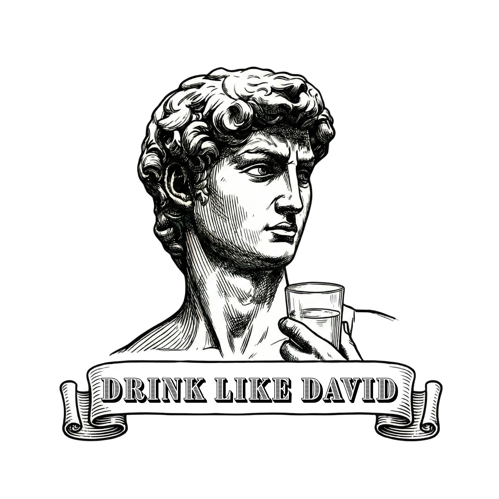
A Hydration-Powered Pomodoro Timer
SVA MFA IxD • Physical Computing • Fall 2025
Category: Physical Computing / Product Design
Course: SVA MFA Interaction Design — Physical Computing
Role: Solo creator — Concept, Research, 3D Modeling, Electronics, Fabrication, Brand Design
Duration: Fall 2025 (14 weeks)
Skills:
Physical Computing
3D Printing
Interaction Design
Brand Identity
Methods:
User Research
Prototyping
Iteration
Exhibition Design
Tools:
Arduino
Blender
Illustrator
Load Cell
NeoPixel LED
DFPlayer Mini
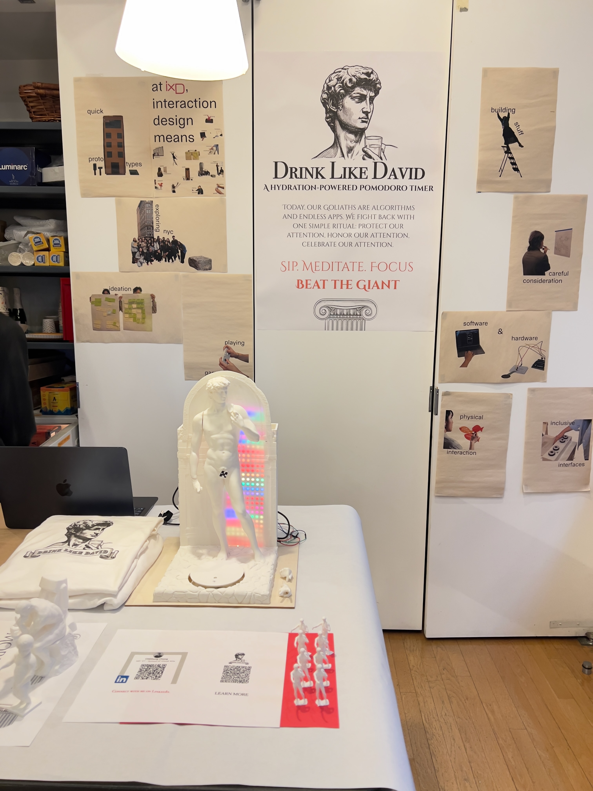
A 3D-printed coaster that turns hydration into a focus ritual — for anyone fighting screen addiction.
A fully functional physical computing device that transforms the Pomodoro productivity technique into a tangible, screen-free ritual — combining hydration tracking, ambient LED feedback, and voice guidance from David himself.
Final presentation demo — Physical Computing, Fall 2025
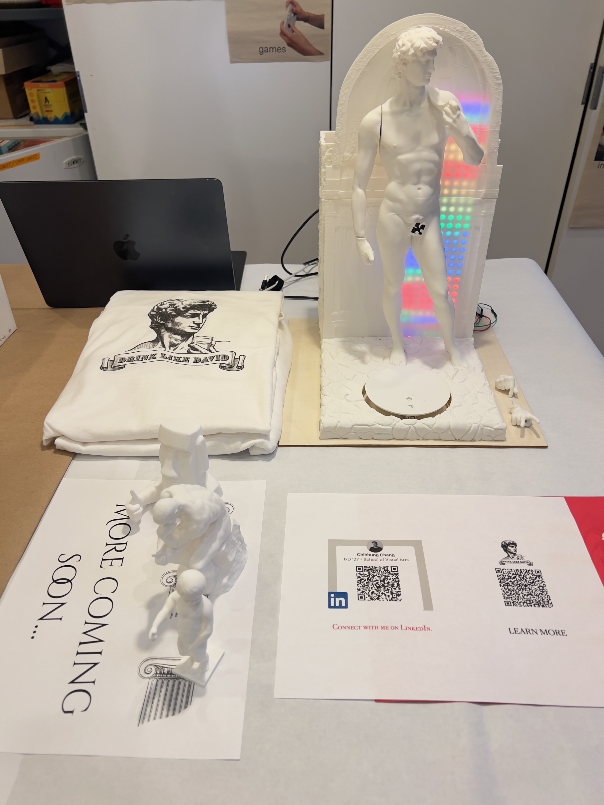
"Today, our Goliath is the Algorithm and the endless apps designed to steal our attention. And like David, we don't need heavy armor to win. We just need a simple stone — a sip of water — and the courage to reclaim our mind."
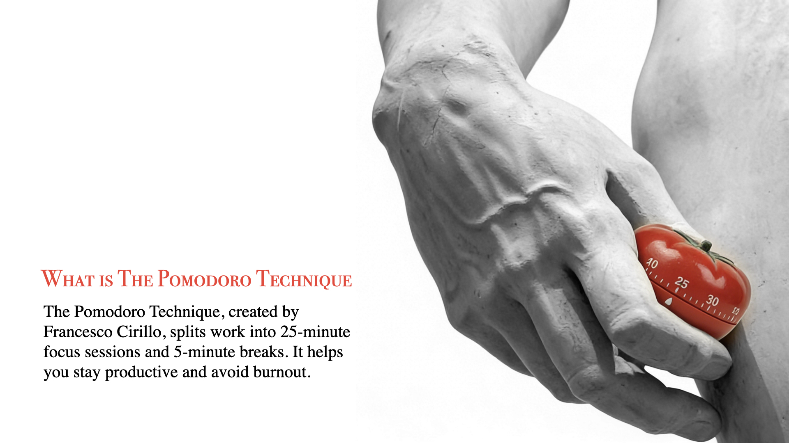
The Pomodoro Technique promises escape from digital distraction — but every popular Pomodoro app lives on the very screen that steals your attention. That's the paradox.
Escape digital distraction
Deep focus
Get away from screens
Phone app / browser tab
Notifications & badges
Lives on a screen
Existing Pomodoro tools live on the very device that distracts us.
Tapping a button has no weight. There's no commitment in the gesture.
Knowledge workers forget to drink water during focus sessions, damaging both health and cognition.
"This project is personal. It grows out of my own journey with Adult ADHD and is for everyone who was ever called 'restless,' 'unfocused,' or 'too much.'"
Replace the app with a water cup. Replace the screen with a sculpture. Replace the notification with a voice.
Sip. Meditate. Focus. Beat the Goliaths.
Fill your cup. Picture your task. Warm up your mind. Take a deliberate sip.
A decisive gesture. The coaster detects the cup's weight and starts a 25-minute session. No screens.
David speaks. LEDs pulse. Reclaim your cup for a 5-minute hydration and rest break.
Visualize the next task. Place the cup again. The cycle is reborn.
SIMPLE LOGIC: Cup there = Focused. Cup gone = Paused. David is on your side.
Drink Like David replaces screen-based Pomodoro apps with a tangible ritual: place your water cup on a 3D-printed Michelangelo's David sculpture coaster to start a 25-minute focus session. A load cell detects the cup's weight, NeoPixel LEDs provide ambient progress feedback, and David himself speaks when the session ends. The metaphor runs deep — David's moment of stillness before facing Goliath mirrors the focused calm we need before our own battles with distraction.
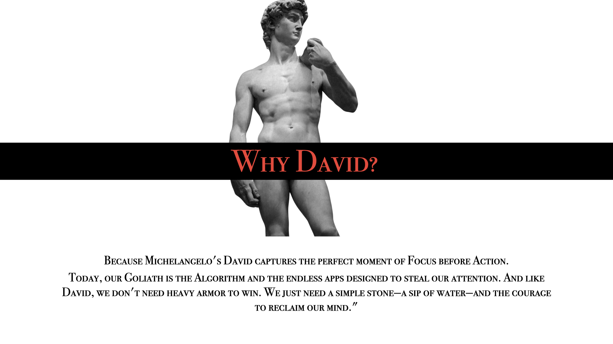
Michelangelo's David captures the perfect moment of Focus before Action — the instant before he faces Goliath, completely still, completely present.
Today, our Goliath is the Algorithm and the endless apps designed to steal our attention. Like David, we don't need heavy armor to win. We just need a simple stone — a sip of water — and the courage to reclaim our mind.
Explored the Pomodoro Technique, ADHD productivity challenges, and the relationship between hydration and cognition. Defined the "Pomodoro Paradox."
Modeled the David sculpture and coaster base in Blender. Printed 18+ parts across multiple iterations, refining dimensions and assembly.
Arduino-based system with load cell (cup detection), NeoPixel LEDs (ambient timer), DFPlayer Mini (David's voice), and speaker integration.
Created complete brand identity — logo, poster, illustration system — all inspired by classical engraving aesthetics to match the David motif.
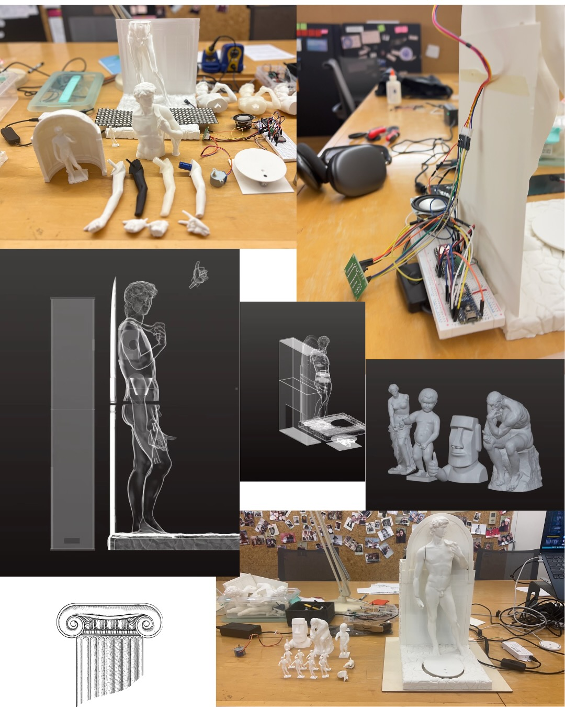
From Blender renders to 3D-printed parts to wired prototypes — the iteration journey
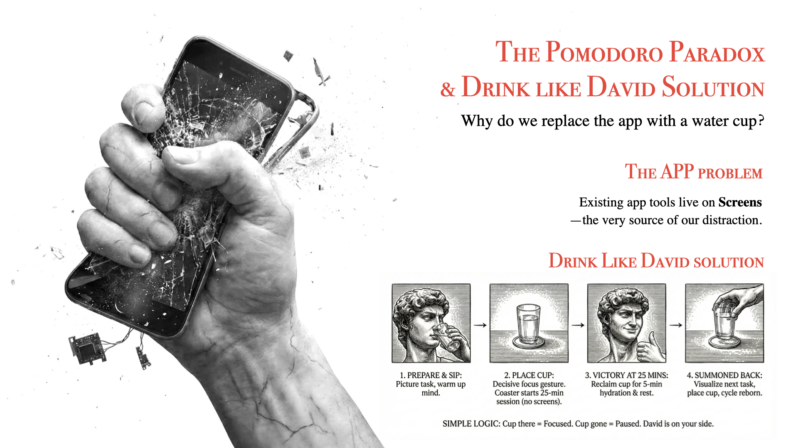
Problem framing and the 4-step ritual solution
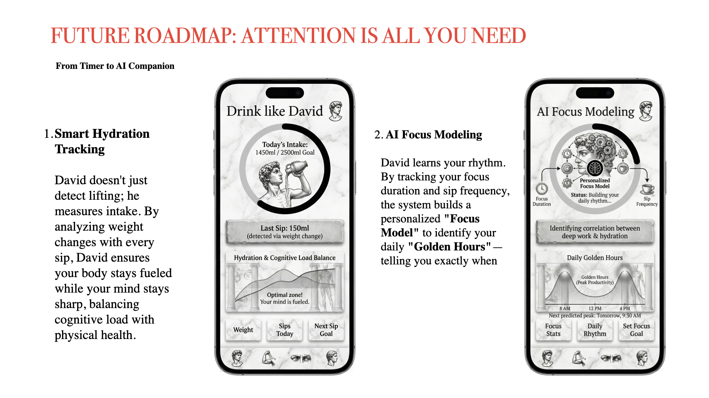
Future vision: Smart Hydration + AI Focus Modeling
"Be gentle with yourself. Celebrate every moment of focus."
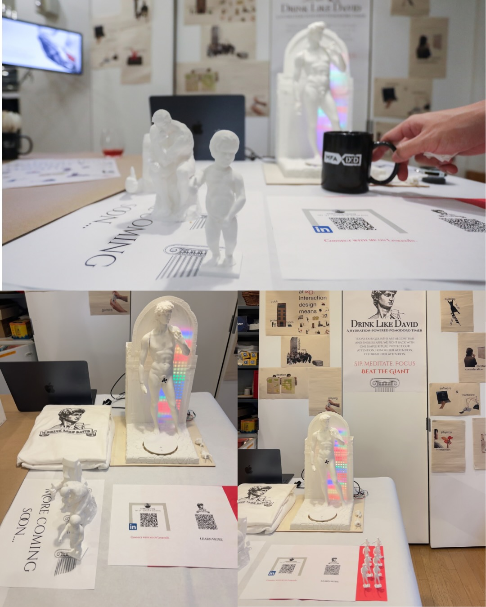
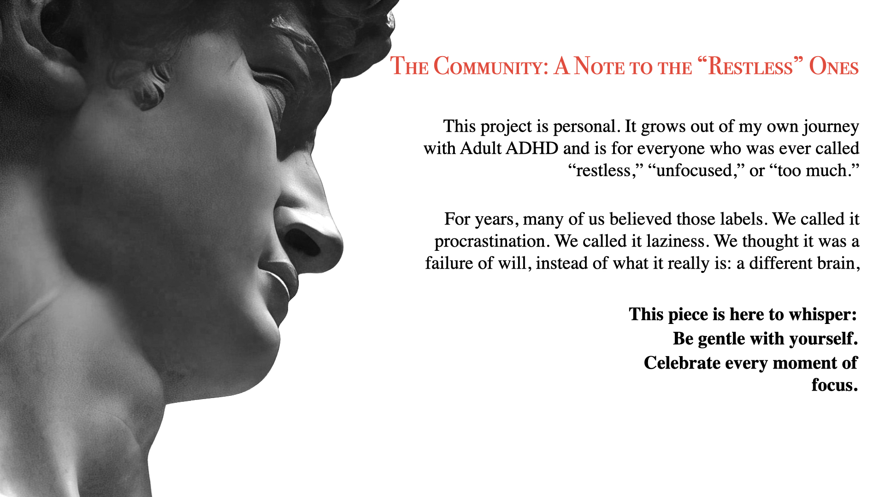
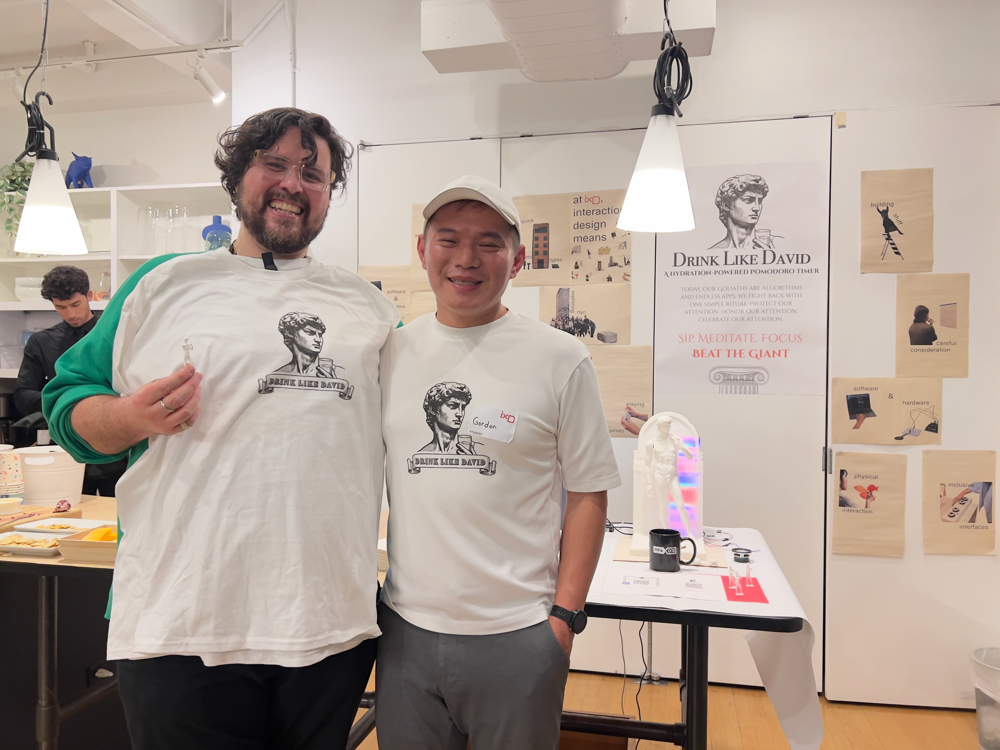
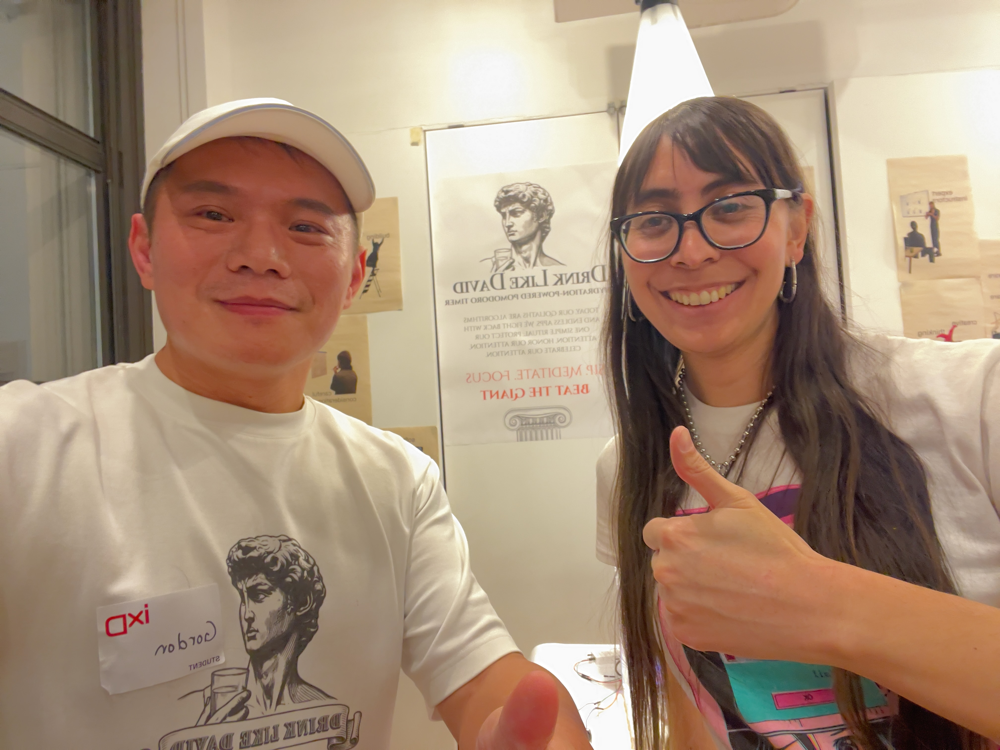
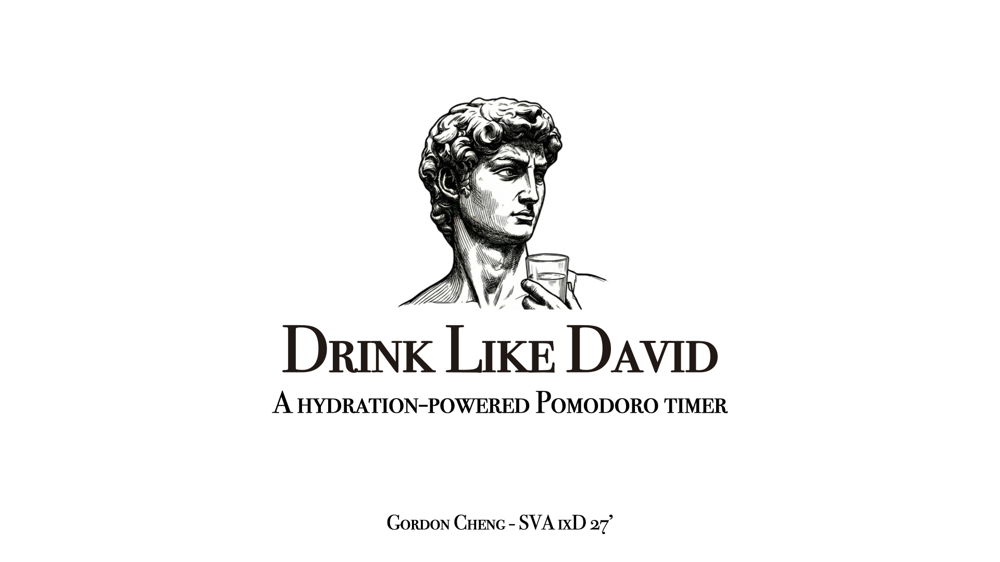
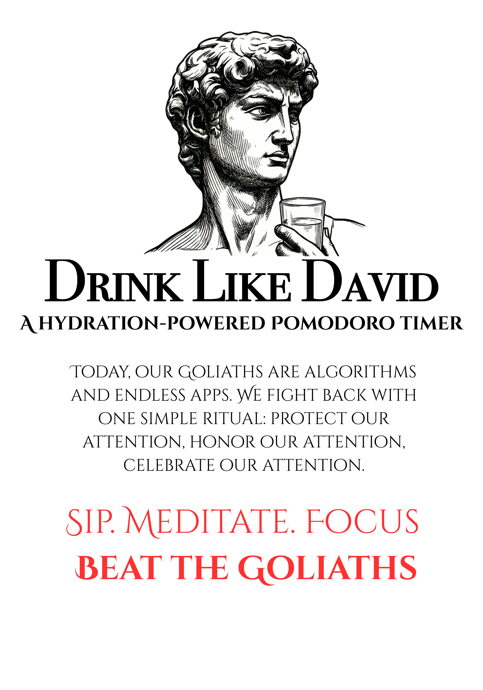
The metaphor drives everything. Choosing Michelangelo's David wasn't just aesthetic — it gave the entire project a narrative backbone. Every design decision (the ritual, the voice, the engraving style) flows from this single metaphor.
Physical > Digital for focus. The act of physically placing a cup has more psychological weight than tapping a button. Users reported feeling genuine "commitment" to the focus session.
Personal story as design fuel. Grounding the project in my ADHD experience made every decision more authentic and the presentation more compelling.
This project taught me that physical computing isn't just about sensors and code — it's about designing meaningful rituals. The technology should be invisible; the experience should be felt.
Every sip is a small victory. Every focus session is a battle won against the Goliaths of distraction.